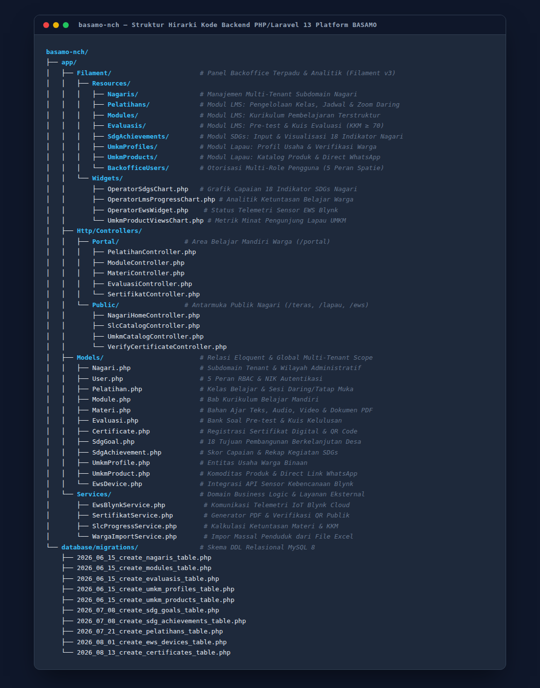

Artefak Pendukung Laporan Kemajuan & Artikel Publikasi: Pemodelan Database MySQL, Arsitektur LMS (Smart Learning Center), Dashboard SDGs Nagari (18 Indikator), Modul E-Commerce Lapau Nagari, dan Struktur Kode Backend Laravel 13.
erDiagram
REF_WILAYAH ||--o{ NAGARIS : "wilayah_kode"
NAGARIS ||--o{ USERS : "nagari_id"
USERS ||--o{ MODEL_HAS_ROLES : "model_id"
ROLES ||--o{ MODEL_HAS_ROLES : "role_id"
TEMA_PELATIHAN ||--o{ PELATIHAN : "tema_pelatihan_id"
NAGARIS ||--o{ PELATIHAN : "nagari_id"
USERS ||--o{ PELATIHAN : "created_by"
PELATIHAN ||--o{ PELATIHAN_NAGARI : "pelatihan_id"
NAGARIS ||--o{ PELATIHAN_NAGARI : "nagari_id"
PELATIHAN ||--o{ PELATIHAN_PENGAJAR : "pelatihan_id"
USERS ||--o{ PELATIHAN_PENGAJAR : "user_id"
PELATIHAN ||--o{ MODULES : "pelatihan_id"
MODULES ||--o{ MATERIS : "module_id"
MODULES ||--o{ USER_MODULE_PROGRESS : "module_id"
USERS ||--o{ USER_MODULE_PROGRESS : "user_id"
MODULES ||--o{ EVALUASIS : "module_id"
EVALUASIS ||--o{ EVALUASI_PERTANYAANS : "evaluasi_id"
EVALUASI_PERTANYAANS ||--o{ EVALUASI_OPSIS : "pertanyaan_id"
EVALUASIS ||--o{ EVALUASI_PERCOBAANS : "evaluasi_id"
USERS ||--o{ EVALUASI_PERCOBAANS : "user_id"
PELATIHAN ||--o{ CERTIFICATES : "pelatihan_id"
USERS ||--o{ CERTIFICATES : "user_id"
SDG_PILLARS ||--o{ SDG_GOALS : "sdg_pillar_id"
SDG_GOALS ||--o{ SDG_TARGETS : "sdg_goal_id"
SDG_TARGETS ||--o{ SDG_INDICATORS : "sdg_target_id"
NAGARIS ||--o{ SDG_ACHIEVEMENTS : "nagari_id"
SDG_GOALS ||--o{ SDG_ACHIEVEMENTS : "sdg_goal_id"
NAGARIS ||--o{ UMKM_PROFILES : "nagari_id"
USERS ||--|| UMKM_PROFILES : "user_id"
UMKM_CATEGORIES ||--o{ UMKM_PRODUCTS : "umkm_category_id"
UMKM_PROFILES ||--o{ UMKM_PRODUCTS : "umkm_profile_id"
UMKM_PRODUCTS ||--o{ UMKM_VIEWS : "umkm_product_id"
NAGARIS {
bigint id PK
string nama
string slug UK
string wilayah_kode FK
string status
}
USERS {
bigint id PK
bigint nagari_id FK
string name
string email UK
string username UK
}
PELATIHAN {
bigint id PK
bigint tema_pelatihan_id FK
string status
boolean semua_nagari
}
MODULES {
bigint id PK
bigint pelatihan_id FK
string judul
string slug UK
integer urutan
}
MATERIS {
bigint id PK
bigint module_id FK
string judul
string tipe
}
EVALUASIS {
bigint id PK
bigint module_id FK
string jenis
integer nilai_lulus
}
CERTIFICATES {
bigint id PK
bigint pelatihan_id FK
bigint user_id FK
string nomor_seri UK
}
SDG_GOALS {
bigint id PK
integer nomor UK
string nama
}
SDG_ACHIEVEMENTS {
bigint id PK
bigint nagari_id FK
bigint sdg_goal_id FK
decimal persentase
}
UMKM_PROFILES {
bigint id PK
bigint nagari_id FK
bigint user_id FK
string nama_usaha
string whatsapp
}
UMKM_PRODUCTS {
bigint id PK
bigint umkm_profile_id FK
string nama_produk
bigint harga
}
erDiagram
TEMA_PELATIHAN ||--o{ PELATIHAN : "tema_pelatihan_id"
PELATIHAN ||--o{ PELATIHAN_NAGARI : "pelatihan_id"
PELATIHAN ||--o{ PELATIHAN_PENGAJAR : "pelatihan_id"
PELATIHAN ||--o{ MODULES : "pelatihan_id"
MODULES ||--o{ MATERIS : "module_id"
MODULES ||--o{ USER_MODULE_PROGRESS : "module_id"
MODULES ||--o{ EVALUASIS : "module_id"
EVALUASIS ||--o{ EVALUASI_PERTANYAANS : "evaluasi_id"
EVALUASI_PERTANYAANS ||--o{ EVALUASI_OPSIS : "pertanyaan_id"
EVALUASIS ||--o{ EVALUASI_PERCOBAANS : "evaluasi_id"
PELATIHAN ||--o{ CERTIFICATES : "pelatihan_id"
MODULES ||--o{ DISCUSSIONS : "module_id"
TEMA_PELATIHAN {
bigint id PK
string nama
string slug UK
text deskripsi
}
PELATIHAN {
bigint id PK
bigint tema_pelatihan_id FK
bigint nagari_id FK
bigint created_by FK
string status "terkunci/terbuka"
boolean semua_nagari
}
MODULES {
bigint id PK
bigint pelatihan_id FK
string judul
string slug UK
integer urutan
bigint prasyarat_module_id FK
}
MATERIS {
bigint id PK
bigint module_id FK
string judul
string slug UK
string tipe "video/artikel/pdf"
integer durasi_menit
integer urutan
}
USER_MODULE_PROGRESS {
bigint id PK
bigint user_id FK
bigint module_id FK
string status "selesai/belum"
timestamp completed_at
}
EVALUASIS {
bigint id PK
bigint module_id FK
string jenis "pretest/kegiatan"
integer nilai_lulus "KKM"
integer maks_percobaan
}
EVALUASI_PERTANYAANS {
bigint id PK
bigint evaluasi_id FK
text pertanyaan
integer urutan
}
EVALUASI_OPSIS {
bigint id PK
bigint pertanyaan_id FK
text opsi_teks
boolean is_benar
}
EVALUASI_PERCOBAANS {
bigint id PK
bigint evaluasi_id FK
bigint user_id FK
integer nilai
boolean is_lulus
timestamp waktu_selesai
}
CERTIFICATES {
bigint id PK
bigint pelatihan_id FK
bigint user_id FK
string nomor_seri UK
timestamp diterbitkan_pada
}
DISCUSSIONS {
bigint id PK
bigint module_id FK
bigint user_id FK
bigint parent_id FK
text pesan
}
erDiagram
SDG_PILLARS ||--o{ SDG_GOALS : "sdg_pillar_id"
SDG_GOALS ||--o{ SDG_TARGETS : "sdg_goal_id"
SDG_TARGETS ||--o{ SDG_INDICATORS : "sdg_target_id"
NAGARIS ||--o{ SDG_ACHIEVEMENTS : "nagari_id"
SDG_GOALS ||--o{ SDG_ACHIEVEMENTS : "sdg_goal_id"
SDG_PILLARS {
bigint id PK
string kode UK "P-1 s.d P-4"
string nama "Sosial, Ekonomi, Lingkungan, Tata Kelola"
}
SDG_GOALS {
bigint id PK
bigint sdg_pillar_id FK
integer nomor UK "1..18 Poin SDGs"
string nama "Nama Tujuan"
string slug UK
string warna "Hex Code Warna"
string ikon "Aset Ikon"
}
SDG_TARGETS {
bigint id PK
bigint sdg_goal_id FK
string nomor
text deskripsi
}
SDG_INDICATORS {
bigint id PK
bigint sdg_target_id FK
string kode UK
string nama
string satuan
}
SDG_ACHIEVEMENTS {
bigint id PK
bigint nagari_id FK
bigint sdg_goal_id FK
decimal persentase "0..100%"
timestamp fetched_at
}
NAGARIS {
bigint id PK
string nama
string slug UK
string wilayah_kode
}
erDiagram
NAGARIS ||--o{ UMKM_PROFILES : "nagari_id"
USERS ||--|| UMKM_PROFILES : "user_id"
UMKM_CATEGORIES ||--o{ UMKM_PRODUCTS : "umkm_category_id"
UMKM_PROFILES ||--o{ UMKM_PRODUCTS : "umkm_profile_id"
UMKM_PRODUCTS ||--o{ UMKM_VIEWS : "umkm_product_id"
NAGARIS {
bigint id PK
string nama
string slug UK
}
USERS {
bigint id PK
string name
string phone
}
UMKM_PROFILES {
bigint id PK
bigint nagari_id FK
bigint user_id FK "1 Warga = 1 Lapak"
string nama_usaha
string slug UK
text deskripsi
text alamat
string whatsapp "Kontak Order"
integer jumlah_dilihat
json tautan "Sosmed/Marketplace"
string status "active"
}
UMKM_CATEGORIES {
bigint id PK
string nama
string slug UK
string ikon
}
UMKM_PRODUCTS {
bigint id PK
bigint umkm_profile_id FK
bigint umkm_category_id FK
string nama_produk
string slug UK
text deskripsi
bigint harga "Rupiah Integer"
json tautan
integer jumlah_dilihat
}
UMKM_VIEWS {
bigint id PK
bigint umkm_product_id FK
string ip_address
text user_agent
timestamp viewed_at
}
flowchart TB
%% 1. PENGGUNA & ROLE RESMI
subgraph UsersLayer ["1. Pemangku Kepentingan & Peran Resmi (5 Peran Spatie + Kapabilitas UMKM)"]
direction LR
SuperAdmin["Super Admin (superadmin)
Wewenang Penuh Lintas Nagari"]
Operator["Operator Nagari (operator)
Perangkat Nagari (Tenant Scoped)"]
Pengajar["Pengajar / Instruktur (pengajar)
Tim Dosen PkM (Lintas Nagari)"]
DPMD["DPMD (dpmd)
Pengawas Daerah (Lintas Nagari)"]
Warga["Warga Nagari (warga)
Peserta Belajar & Pengguna Layanan"]
WargaUMKM["Warga Pelaku UMKM
(warga + hasUmkmAccess)
Pemilik 1 Lapak Binaan"]
end
%% 2. INFRASTRUKTUR HOSTING HOSTINGER & JARINGAN
subgraph HostingLayer ["2. Infrastruktur Server Hostinger & Jaringan Multi-Tenant"]
direction TB
Cloudflare["Cloudflare Edge & Security
SSL Termination, DDoS Protection, Trusted Proxies"]
HostingerDNS["Hostinger hPanel & DNS Routing
AutoSSL per Subdomain"]
LiteSpeedServer["Hostinger Web Server (LiteSpeed / Apache)
Document Root Tunggal: public_html"]
SubdomainResolver["Laravel Subdomain & Tenant Resolver
Memetakan Host Header: {slug}.basamonch.com vs basamonch.com"]
end
%% 3. GERBANG OTENTIKASI GANDA
subgraph AuthGateway ["3. Gerbang Masuk & Otentikasi Ganda (/login)"]
direction LR
LoginNIK["Login Warga via NIK (16 Digit)
Tervalidasi Data Kependudukan Nagari"]
LoginUser["Login Pengelola via Username
(Superadmin, Operator, Pengajar, DPMD)"]
SessionDomain["Single Sign-On Session
Cookie: SESSION_DOMAIN=.basamonch.com"]
end
%% 4. MODUL KANONIK ADAT BASAMO NCH
subgraph PlatformModules ["4. Ekosistem Modul Kanonik BASAMO NCH (Core Domain Engines)"]
direction TB
subgraph Teras ["Teras Nagari (/teras-nagari)"]
SDGs18["Dashboard SDGs Nagari (18 Indikator)
4 Pilar: Sosial, Ekonomi, Lingkungan, Tata Kelola"]
IDMNagari["Monitoring Indeks Desa Membangun (IDM)"]
end
subgraph Balinduang ["Medan Nan Balinduang (Smart Learning Center / LMS)"]
TemaModul["Kurikulum & Modul Ajar Multimedia Berjenjang"]
EvaluasiKKM["Evaluasi Belajar (Pre-test & Kuis KKM >= 70)"]
SertifikatQR["Penerbitan Sertifikat Digital Ber-QR Code"]
ForumDiskusi["Forum Diskusi Warga (Anti-Flood Rate Limit)"]
end
subgraph Lapau ["Lapau Nagari (/lapau-nagari)"]
ProfilLapak["Profil Usaha (1 Warga = 1 Lapak Binaan)"]
KatalogSearch["Katalog Komoditas & MySQL FullText Search"]
OrderWA["Pemesanan Langsung WhatsApp Tanpa Biaya Perantara"]
AnalyticsView["Pelacak Minat Kunjungan Produk (UmkmView)"]
end
subgraph Bapaneh ["Medan Nan Bapaneh (/medan-nan-bapaneh)"]
InfoPublik["Keterbukaan Informasi & Pengumuman Nagari"]
KanalAspirasi["Kanal Kontak Masuk & Aspirasi Warga"]
end
subgraph IoT_EWS ["Sistem IoT & EWS (Early Warning System)"]
DeviceSensor["Perangkat Sensor Telemetri Fisik (EwsDevice)"]
ReadingBencana["Pembacaan Real-time Indikator Bencana (EwsReading)"]
end
end
%% 5. PANEL BACKOFFICE & VERIFIKASI
subgraph ControlLayer ["5. Panel Pengelola & Layanan Publik"]
direction LR
BackofficeFilament["Backoffice Terpadu (Filament v5)
Widget ApexCharts SDGs, LMS Progress, & Lapau Views"]
VerifyEndpoint["Verifikasi Sertifikat Publik (/verify/{nomor})
Pemindai QR Code Dokumen Fisik"]
end
%% 6. PERSISTENCE LAYER HOSTINGER
subgraph DataStorage ["6. Lapisan Penyimpanan Data Hostinger"]
direction LR
MariaDB[("Database MySQL/MariaDB Hostinger
Database: basamo_nch (Multi-Tenant Relational)")]
FileStorage[("Hostinger File Storage (public_html/storage)
Spatie MediaLibrary & Arsip Sertifikat PDF DomPDF")]
end
%% ALUR RELASI LENGKAP
SuperAdmin --> Cloudflare
Operator --> Cloudflare
Pengajar --> Cloudflare
DPMD --> Cloudflare
Warga --> Cloudflare
WargaUMKM --> Cloudflare
Cloudflare --> HostingerDNS
HostingerDNS --> LiteSpeedServer
LiteSpeedServer --> SubdomainResolver
SubdomainResolver --> LoginNIK
SubdomainResolver --> LoginUser
LoginNIK --> SessionDomain
LoginUser --> SessionDomain
SessionDomain --> Teras
SessionDomain --> Balinduang
SessionDomain --> Lapau
SessionDomain --> Bapaneh
IoT_EWS --> Teras
Balinduang --> SertifikatQR
SertifikatQR --> VerifyEndpoint
PlatformModules --> BackofficeFilament
PlatformModules --> MariaDB
Balinduang --> FileStorage
Lapau --> FileStorage
| Komponen | Implementasi Teknis | Keterangan Fungsional |
|---|---|---|
| 5 Peran Resmi Spatie RBAC | superadmin, operator, pengajar, dpmd, warga |
Hierarki wewenang resmi platform. Role superadmin, pengajar, dan dpmd berwenang lintas nagari (isLintasNagari), sedangkan operator dan warga terisolasi per tenant (nagari_id). |
| Kapabilitas UMKM Warga | warga + hasUmkmAccess() |
UMKM bukan role terpisah melainkan kapabilitas wirausaha warga yang diverifikasi oleh operator nagari. Setiap warga berhak mengelola 1 profil lapak binaan (1-to-1). |
| Infrastruktur Server Hostinger | Hostinger Shared Hosting, LiteSpeed Web Server, Document Root public_html |
Semua subdomain ({slug}.basamonch.com) dipetakan ke direktori tunggal public_html. Wildcard DNS tidak didukung di Hostinger shared, sehingga subdomain dibuat per nagari di hPanel dengan sertifikat AutoSSL aktif per host. |
| Multi-Tenant Resolver | Nagari::fromHost() Middleware |
Mendeteksi Host Header request. Jika subdomain cocok dengan slug nagari aktif, konteks tenant diinisialisasi. Sedia fallback route /n/{nagari:slug} jika DNS propagasi belum tuntas. |
| Gerbang Otentikasi Ganda | NIK 16 Digit (Warga) vs Username (Pengelola) | Warga nagari login dengan NIK 16 digit tervalidasi data kependudukan. Pengelola masuk via username. Sesi disinkronkan antar-subdomain menggunakan SESSION_DOMAIN=.basamonch.com. |
| Sistem IoT & EWS Kebencanaan | Tabel ews_devices & ews_readings |
Menerima telemetri pembacaan sensor kebencanaan lapangan nagari (tinggi air, curah hujan) untuk peringatan dini warga di modul Teras Nagari. |
// =====================================================================
// ARSITEKTUR LENGKAP PLATFORM BASAMO NCH (100% SESUAI SISTEM NYATA)
// Server: Hostinger | Framework: Laravel 13 | Multi-Tenant Subdomain
// Sintaks Resmi Eraser.io (https://eraser.readme.io/docs/syntax)
// =====================================================================
title Arsitektur Lengkap Platform BASAMO NCH (Hostinger)
direction down
colorMode bold
styleMode shadow
typeface clean
Peran Pengguna Platform BASAMO [icon: users, color: blue] {
SuperAdmin [icon: shield, color: red, label: "Super Admin (superadmin)"]
OperatorNagari [icon: user-check, color: orange, label: "Operator Nagari (operator)"]
PengajarPkM [icon: award, color: green, label: "Pengajar PkM (pengajar)"]
DPMD [icon: eye, color: blue, label: "DPMD Pengawas (dpmd)"]
WargaNagari [icon: user, color: slate, label: "Warga Nagari (warga)"]
WargaUMKM [icon: shopping-bag, color: purple, label: "Warga Pelaku UMKM (hasUmkmAccess)"]
}
Infrastruktur Hostinger dan Jaringan [icon: server, color: slate] {
CloudflareEdge [icon: shield, color: orange, label: "Cloudflare Edge & SSL (Trusted Proxies)"]
HostingerDNS [icon: globe, color: blue, label: "Hostinger hPanel & DNS Routing"]
LiteSpeedServer [icon: server, color: slate, label: "LiteSpeed Web Server (public_html)"]
SubdomainResolver [icon: router, color: yellow, label: "Laravel Subdomain & Tenant Resolver"]
}
Gerbang Masuk dan Otentikasi [icon: lock, color: yellow] {
LoginNIK [icon: key, color: blue, label: "Login Warga via NIK (16 Digit)"]
LoginUsername [icon: lock, color: orange, label: "Login Pengelola via Username"]
SessionSSO [icon: zap, color: green, label: "Single Sign-On Session (.basamonch.com)"]
}
Ekosistem Modul Kanonik BASAMO [icon: layers, color: blue] {
Teras Nagari [icon: bar-chart-2, color: orange] {
SDGsDashboard [icon: bar-chart, label: "Dashboard 18 Indikator SDGs Nagari"]
IDMMonitoring [icon: activity, label: "Monitoring Indeks Desa Membangun (IDM)"]
}
Medan Nan Balinduang [icon: book-open, color: green] {
KurikulumModul [icon: file-text, label: "Kurikulum & Modul Ajar Terurut"]
EvaluasiBelajar [icon: check-circle, label: "Evaluasi Belajar (Pretest & Kuis KKM >= 70)"]
SertifikatDigital [icon: award, label: "Penerbitan Sertifikat Digital Ber-QR Code"]
ForumDiskusi [icon: message-square, label: "Forum Diskusi Warga (Anti-Flood Limit)"]
}
Lapau Nagari [icon: shopping-bag, color: purple] {
ProfilLapak [icon: user, label: "Profil Lapak Binaan (1 Warga 1 Usaha)"]
KatalogProduk [icon: search, label: "Katalog Komoditas & MySQL FullText Search"]
OrderWhatsApp [icon: message-circle, label: "Pemesanan Langsung WhatsApp (wa.me)"]
PelacakKunjungan [icon: eye, label: "Pelacak Minat Produk (UmkmView)"]
}
Medan Nan Bapaneh [icon: users, color: blue] {
InformasiPublik [icon: info, label: "Keterbukaan Informasi Publik Nagari"]
KanalAspirasi [icon: mail, label: "Kanal Aspirasi & Kontak Masuk"]
}
Sistem IoT dan EWS [icon: radio, color: red] {
SensorFisik [icon: cpu, label: "Perangkat Sensor Telemetri (EwsDevice)"]
TelemetriBencana [icon: alert-triangle, label: "Pembacaan Realtime Indikator Bencana (EwsReading)"]
}
}
Panel Pengelola dan Layanan Publik [icon: settings, color: slate] {
BackofficeFilament [icon: sliders, color: orange, label: "Backoffice Filament v5 (ApexCharts)"]
VerifikasiPublik [icon: check-square, color: green, label: "Verifikasi Sertifikat Publik (/verify/{nomor})"]
}
Penyimpanan Data Hostinger [icon: server, color: slate] {
DatabaseMySQL [icon: database, color: blue, label: "MySQL/MariaDB Server (basamo_nch)"]
FileStorage [icon: hard-drive, color: slate, label: "File Storage (public_html/storage)"]
}
legend {
[shape: rectangle, color: red, label: "Wewenang Global Lintas Nagari (superadmin, pengajar, dpmd)"]
[shape: rectangle, color: orange, label: "Wewenang Terisolasi Per Nagari (operator)"]
[shape: rectangle, color: slate, label: "Warga Nagari Terdaftar (NIK 16 Digit)"]
[shape: rectangle, color: purple, label: "Kapabilitas Khusus Wirausaha Warga (hasUmkmAccess)"]
[connection: >, label: "Alur Permintaan Akses / Request Flow"]
}
SuperAdmin, OperatorNagari, PengajarPkM, DPMD, WargaNagari, WargaUMKM > CloudflareEdge: Permintaan HTTPS
CloudflareEdge > HostingerDNS > LiteSpeedServer > SubdomainResolver
SubdomainResolver > LoginNIK: Otentikasi Warga (NIK)
SubdomainResolver > LoginUsername: Otentikasi Pengelola (Username)
LoginNIK, LoginUsername > SessionSSO: Sesi Multi-Tenant
SessionSSO > Teras Nagari, Medan Nan Balinduang, Lapau Nagari, Medan Nan Bapaneh
SensorFisik > TelemetriBencana > Teras Nagari: Telemetri Kebencanaan
KurikulumModul > EvaluasiBelajar > SertifikatDigital
SertifikatDigital > VerifikasiPublik: Pemindaian QR Code Dokumen
Ekosistem Modul Kanonik BASAMO > BackofficeFilament: Pemantauan Pengelola
Ekosistem Modul Kanonik BASAMO > DatabaseMySQL: Transaksi Data Relasional
SertifikatDigital > FileStorage: Arsip PDF DomPDF
ProfilLapak > FileStorage: Foto Produk Spatie MediaLibrary
flowchart TB
%% 1. LAPISAN PENGGUNA (5 PERAN SPATIE RBAC)
subgraph Tier1 ["1. Lapisan Pengguna Platform (5 Peran Spatie RBAC)"]
Warga["Warga (NIK Login)"]
Pengajar["Pengajar (Instruktur PkM)"]
DPMD["DPMD (Pengawas Daerah)"]
Operator["Operator (Perangkat Nagari)"]
Superadmin["Superadmin (Pengelola Sistem)"]
end
%% 2. JARINGAN & SUBDOMAIN RESOLVER
subgraph Tier2 ["2. Jaringan & Subdomain Gateway (Hostinger VPS)"]
Cloudflare["Cloudflare Edge SSL & CDN"]
TenantResolver["Subdomain Tenant Resolver (*.basamonch.com)"]
Cloudflare --> TenantResolver
end
%% 3. LAPISAN ANTARMUKA LAYANAN (5 KANONIK GATEWAYS)
subgraph Tier3 ["3. Lapisan Antarmuka Layanan (Kanonik BASAMO NCH)"]
PortalTeras["Teras Nagari & IoT\n(/teras-nagari)"]
PortalBalinduang["Medan Nan Balinduang\n(/portal & /verify)"]
PortalBapaneh["Medan Nan Bapaneh\n(/medan-nan-bapaneh)"]
PortalLapau["Lapau Nagari\n(/lapau-nagari)"]
PortalBackoffice["Backoffice Panel\n(/panel) - Filament v3"]
end
%% 4. BACKEND PLATFORM & LOGIKA BISNIS
subgraph Tier4 ["4. Backend Platform & Logika Bisnis (Laravel 13 Core)"]
direction LR
%% PILAR 1: TERAS NAGARI SDGs
subgraph SDGsEngine ["Pilar 1: Teras SDGs Nagari Engine"]
direction TB
SDGsGoals["4 Pilar & 18 Goals SDGs Desa"]
SDGsMap["Batas GeoJSON & Capaian Riil"]
end
%% MODUL TELEMETRI: EWS KEBENCANAAN
subgraph EWSEngine ["Modul Telemetri: EWS Mitigasi Bencana"]
direction TB
EWSSensor["Sensor Air, Hujan & EwsBlynkService"]
EWSAlert["Indikator Status (Normal/Waspada/Bahaya)"]
end
%% PILAR 2: LMS
subgraph LMSEngine ["Pilar 2: Medan Nan Balinduang (LMS)"]
direction TB
LMSLearn["Pelatihan, Modul, Materi & Diskusi"]
LMSCert["Kuis Evaluasi (KKM >= 70) & Sertifikat QR"]
end
%% PILAR 3: MEDAN NAN BAPANEH (BUDAYA & INOVASI)
subgraph BapanehEngine ["Pilar 3: Medan Nan Bapaneh (Budaya)"]
direction TB
BapanehArsip["Arsip & Dokumentasi Pengetahuan Lokal"]
BapanehKarya["Ruang Karya Kreatif & Publikasi Nagari"]
end
%% PILAR 4: LAPAU NAGARI UMKM
subgraph UMKMEngine ["Pilar 4: Lapau Nagari UMKM Engine"]
direction TB
UMKMKatalog["Profil UMKM & Katalog Komoditas"]
UMKMWA["Direct Order WhatsApp & UmkmView"]
end
%% FONDASI KEAMANAN & MULTI-TENANT
subgraph CoreSecurity ["Keamanan & Multi-Tenant Core"]
direction TB
CoreRBAC["Spatie RBAC (5 Peran) & Auth NIK"]
CoreTenant["Scope Multi-Tenant (nagari_id)"]
end
end
%% 5. PENYIMPANAN DATA & EKSTERNAL
subgraph Tier5 ["5. Penyimpanan Data & Layanan Eksternal (Hostinger)"]
BlynkCloud["Blynk IoT Cloud\n(Telemetri Sensor)"]
MySQLDB[("MySQL 8 Relasional\n(InnoDB nagari_id)")]
FileStorage[("Hostinger Storage\n(PDF Sertifikat & Media)")]
WAGateway["WhatsApp Gateway\n(Direct Order UMKM)"]
SessionCache[("Session & Cache\n(.basamonch.com)")]
end
%% ALUR PENGGUNA KE GATEWAY
Warga -->|HTTPS| Cloudflare
Pengajar -->|HTTPS| Cloudflare
DPMD -->|HTTPS| Cloudflare
Operator -->|HTTPS| Cloudflare
Superadmin -->|HTTPS| Cloudflare
TenantResolver --> PortalTeras
TenantResolver --> PortalBalinduang
TenantResolver --> PortalBapaneh
TenantResolver --> PortalLapau
TenantResolver --> PortalBackoffice
PortalTeras --> SDGsEngine
PortalTeras --> EWSEngine
PortalBalinduang --> LMSEngine
PortalBapaneh --> BapanehEngine
PortalLapau --> UMKMEngine
PortalBackoffice --> CoreSecurity
SDGsEngine --> MySQLDB
EWSEngine --> MySQLDB
EWSEngine --> BlynkCloud
LMSEngine --> MySQLDB
LMSEngine --> FileStorage
BapanehEngine --> MySQLDB
BapanehEngine --> FileStorage
UMKMEngine --> MySQLDB
UMKMEngine --> WAGateway
CoreSecurity --> MySQLDB
CoreSecurity --> SessionCache
// =====================================================================
// ARSITEKTUR PLATFORM BASAMO NCH (OPSI 2: DIET VISUAL SEIMBANG & CLEAN)
// Validasi Faktual: Laravel 13 | Filament v3 (/panel) | MySQL 8 | Hostinger VPS
// Karakteristik: Lebih Ramping, Tanpa Bloating, 5 Pintu Layanan Simetris
// Format: Eraser.io (https://app.eraser.io)
// =====================================================================
title Arsitektur Resmi Platform BASAMO NCH (Clean & Balanced Architecture)
direction down
colorMode bold
styleMode shadow
typeface clean
// ---------------------------------------------------------------------
// 1. LAPISAN PENGGUNA (5 PERAN SPATIE RBAC)
// ---------------------------------------------------------------------
Pengguna Platform [icon: users, color: blue, label: "1. Pengguna Platform (5 Peran Spatie RBAC)"] {
Warga [icon: user, color: blue, label: "Warga (NIK Login)"]
Pengajar [icon: award, color: green, label: "Pengajar (Instruktur PkM)"]
DPMD [icon: eye, color: blue, label: "DPMD (Pengawas Daerah)"]
Operator [icon: user-check, color: orange, label: "Operator (Perangkat Nagari)"]
Superadmin [icon: shield, color: red, label: "Superadmin (Pengelola Sistem)"]
}
// ---------------------------------------------------------------------
// 2. JARINGAN & SUBDOMAIN GATEWAY (HOSTINGER VPS)
// ---------------------------------------------------------------------
Infrastruktur Jaringan [icon: globe, color: blue, label: "2. Jaringan & Subdomain Gateway (Hostinger VPS)"] {
Cloudflare Edge SSL [icon: shield, color: orange, label: "Cloudflare Edge SSL & CDN"]
Subdomain Tenant Resolver [icon: globe, color: blue, label: "Subdomain Tenant Resolver (*.basamonch.com)"]
}
// ---------------------------------------------------------------------
// 3. LAPISAN ANTARMUKA LAYANAN (5 PINTU KANONIK BASAMO)
// ---------------------------------------------------------------------
Lapisan Antarmuka [icon: monitor, color: blue, label: "3. Lapisan Antarmuka Layanan (Kanonik BASAMO NCH)"] {
Teras Nagari SDGs [icon: bar-chart-2, color: orange, label: "Teras Nagari & IoT (/teras-nagari)"]
Medan Nan Balinduang [icon: book-open, color: green, label: "Medan Nan Balinduang (/portal & /verify)"]
Medan Nan Bapaneh [icon: sparkles, color: teal, label: "Medan Nan Bapaneh (/medan-nan-bapaneh)"]
Lapau Nagari UMKM [icon: shopping-bag, color: purple, label: "Lapau Nagari (/lapau-nagari)"]
Backoffice Panel [icon: settings, color: slate, label: "Backoffice Panel (/panel) - Filament v3"]
}
// ---------------------------------------------------------------------
// 4. BACKEND PLATFORM & LOGIKA BISNIS (LARAVEL 13 CORE)
// ---------------------------------------------------------------------
Backend Platform BASAMO [icon: server, color: red, label: "4. Backend Platform & Logika Bisnis (Laravel 13 Core)"] {
SDGs Nagari Engine [icon: bar-chart-2, color: orange, label: "Pilar 1: Teras SDGs Nagari Engine"] {
SDGs Goals Indikator [icon: bar-chart, label: "4 Pilar & 18 Goals SDGs Desa"]
Peta Spasial Capaian [icon: map, label: "Batas Spasial GeoJSON & Capaian Riil"]
}
EWS Blynk IoT Engine [icon: activity, color: red, label: "Modul Telemetri: EWS Mitigasi Bencana"] {
Sensor dan API Blynk [icon: radio, label: "Sensor Air, Hujan & EwsBlynkService"]
Status Bahaya Sungai [icon: alert-triangle, label: "Indikator Status (Normal/Waspada/Bahaya)"]
}
LMS Core Engine [icon: award, color: green, label: "Pilar 2: Medan Nan Balinduang (LMS Core)"] {
Alur Pembelajaran [icon: book-open, label: "Pelatihan, Modul, Materi & Forum Diskusi"]
Evaluasi dan Sertifikat [icon: check-circle, label: "Kuis Evaluasi (KKM >= 70) & Sertifikat QR"]
}
Bapaneh Engine [icon: sparkles, color: teal, label: "Pilar 3: Medan Nan Bapaneh (Budaya & Inovasi)"] {
Arsip Budaya Lokal [icon: archive, label: "Arsip & Dokumentasi Pengetahuan Lokal"]
Ruang Inovasi Nagari [icon: zap, label: "Ruang Karya Kreatif & Publikasi Nagari"]
}
Lapau Nagari Engine [icon: shopping-bag, color: purple, label: "Pilar 4: Lapau Nagari UMKM Engine"] {
Katalog Produk UMKM [icon: shopping-bag, label: "Profil UMKM Binaan & Katalog Komoditas"]
Direct Order WA [icon: message-circle, label: "Direct Order WhatsApp & UmkmView Tracker"]
}
Security and Core [icon: shield, color: blue, label: "Fondasi Keamanan & Multi-Tenant Core"] {
Spatie RBAC Auth [icon: lock, label: "Spatie RBAC (5 Peran) & Autentikasi NIK"]
Global Nagari Scope [icon: layers, label: "Global Tenant Scope (where nagari_id = ?)"]
}
}
// ---------------------------------------------------------------------
// 5. BASIS DATA & PENYIMPANAN PERSISTEN (HOSTINGER)
// ---------------------------------------------------------------------
Penyimpanan Data [icon: database, color: slate, label: "5. Penyimpanan Data & Layanan Eksternal (Hostinger)"] {
Layanan Blynk IoT [icon: cloud, color: red, label: "Blynk IoT Cloud (Telemetri Sensor)"]
Database MySQL Delapan [icon: mysql, color: blue, label: "MySQL 8 Relasional (InnoDB nagari_id)"]
Storage Berkas Hostinger [icon: hard-drive, color: slate, label: "Hostinger Storage (PDF Sertifikat & Media)"]
WhatsApp Gateway API [icon: message-circle, color: purple, label: "WhatsApp Gateway (Direct Order)"]
Session dan Cache State [icon: zap, color: yellow, label: "Session & Cache (.basamonch.com)"]
}
// =====================================================================
// ALUR PERGERAKAN DATA (LANGSUNG, BERSIH, MINIMAL DISTORSI)
// =====================================================================
// 1. Pengguna ke Jaringan
Warga, Pengajar, DPMD, Operator, Superadmin > Cloudflare Edge SSL: Permintaan Web HTTPS
Cloudflare Edge SSL > Subdomain Tenant Resolver: Resolusi Host Subdomain Nagari
// 2. Distribusi ke 5 Pintu Layanan Kanonik BASAMO
Subdomain Tenant Resolver > Teras Nagari SDGs
Subdomain Tenant Resolver > Medan Nan Balinduang
Subdomain Tenant Resolver > Medan Nan Bapaneh
Subdomain Tenant Resolver > Lapau Nagari UMKM
Subdomain Tenant Resolver > Backoffice Panel
// 3. Antarmuka Layanan ke Service Engine Backend
Teras Nagari SDGs > SDGs Nagari Engine: Visualisasi Capaian SDGs & Peta
Teras Nagari SDGs > EWS Blynk IoT Engine: Widget Telemetri Sensor Sungai (#iot)
Medan Nan Balinduang > LMS Core Engine: Portal Belajar Mandiri & Verifikasi QR
Medan Nan Bapaneh > Bapaneh Engine: Eksplorasi Budaya & Karya Inovasi
Lapau Nagari UMKM > Lapau Nagari Engine: Etalase Komoditas UMKM Warga
Backoffice Panel > Security and Core: Manajemen 5 Peran & Tenant nagari_id
// 4. Backend ke Lapisan Basis Data & Layanan Eksternal
SDGs Nagari Engine > Database MySQL Delapan: 4 Pilar, 18 Goals & Capaian
EWS Blynk IoT Engine > Database MySQL Delapan: Riwayat Pembacaan Sensor
EWS Blynk IoT Engine > Layanan Blynk IoT: Telemetri Blynk IoT Cloud
LMS Core Engine > Database MySQL Delapan: Nilai Kuis KKM 70 & Presensi
LMS Core Engine > Storage Berkas Hostinger: Arsip PDF Sertifikat & Transkrip
Bapaneh Engine > Database MySQL Delapan: Metadata Budaya & Inovasi
Bapaneh Engine > Storage Berkas Hostinger: File Media & Dokumentasi
Lapau Nagari Engine > Database MySQL Delapan: Profil UMKM, Produk & Kategori
Lapau Nagari Engine > WhatsApp Gateway API: Kontak Direct Order WhatsApp
Security and Core > Database MySQL Delapan: Pengguna & Peran Spatie
Security and Core > Session dan Cache State: Sesi Multi-Tenant & Token
sequenceDiagram
autonumber
actor Warga as Warga / Peserta Belajar
participant UI as Antarmuka Portal Belajar
participant LmsCtrl as Controller & Engine LMS
participant DB as Database MySQL
participant Cert as DomPDF & QR Generator
Warga->>UI: 1. Pilih Pelatihan di Nagari
UI->>LmsCtrl: Cek Akses & Status Pelatihan
LmsCtrl->>DB: Query `pelatihans` (status = terbuka)
DB-->>LmsCtrl: Data Pelatihan & Daftar Modul
LmsCtrl-->>UI: Tampilkan Materi Ajar
opt Pre-test Sebelum Belajar
Warga->>UI: 2. Kerjakan Pre-test Awal
UI->>LmsCtrl: Kirim Jawaban Pre-test
LmsCtrl->>DB: Simpan Skor di `evaluasi_percobaans`
end
loop Belajar Tiap Materi
Warga->>UI: 3. Baca Materi / Putar Video
UI->>LmsCtrl: Tandai Selesai
LmsCtrl->>DB: Update `user_module_progress`
end
Warga->>UI: 4. Kerjakan Kuis Akhir (Evaluasi Kegiatan)
UI->>LmsCtrl: Submit Lembar Jawaban
LmsCtrl->>DB: Evaluasi Nilai terhadap KKM (>= 70)
alt Nilai Lulus
LmsCtrl->>Cert: Generate Sertifikat Digital
Cert->>DB: Catat Nomor Seri Unik di `certificates`
Cert-->>Warga: Unduh Berkas PDF Sertifikat + QR Code
else Nilai Belum Mencukupi
LmsCtrl-->>Warga: Notifikasi Remedial / Ulangi Materi
end

basamo-nch/ ├── app/ │ ├── Filament/ # Panel Backoffice & Analitik (Filament v3) │ │ ├── Resources/ │ │ │ ├── Nagaris/ # Manajemen Multi-Tenant Subdomain Nagari │ │ │ ├── Pelatihans/ # Modul LMS: Pengelolaan Kelas & Pengajar │ │ │ ├── Modules/ # Modul LMS: Kurikulum Buku Ajar Berurutan │ │ │ ├── Evaluasis/ # Modul LMS: Pre-test & Kuis Evaluasi Kelulusan │ │ │ ├── SdgAchievements/ # Modul SDGs: Input & Visualisasi 18 Indikator Nagari │ │ │ ├── UmkmProfiles/ # Modul Lapau: Profil Lapak UMKM Warga │ │ │ ├── UmkmCategories/ # Modul Lapau: Taksonomi Kategori Produk │ │ │ ├── UmkmProducts/ # Modul Lapau: Katalog Produk & Full-Text Search │ │ │ └── BackofficeUsers/ # Otorisasi Multi-Role Pengguna (5 Peran) │ │ └── Widgets/ │ │ ├── OperatorSdgsChart.php # Visualisasi Grafik Capaian SDGs Nagari │ │ ├── OperatorLmsProgressChart.php # Metrik Analisis Progres Belajar Warga │ │ └── UmkmProductViewsChart.php # Tren Analitik Minat Pengunjung Lapau │ ├── Http/Controllers/ │ │ ├── Portal/ # Area Pembelajaran Mandiri Warga │ │ │ ├── PelatihanController.php │ │ │ ├── ModuleController.php │ │ │ ├── MateriController.php │ │ │ ├── EvaluasiController.php │ │ │ └── SertifikatController.php │ │ └── Public/ # Subdomain Publik Nagari │ │ ├── NagariHomeController.php │ │ ├── SlcCatalogController.php │ │ ├── UmkmCatalogController.php │ │ └── SertifikatVerifikasiController.php │ └── Models/ # Eloquent Data Modeling & Relasi │ ├── Nagari.php # Isolasi Tenant & Konfigurasi Wilayah │ ├── User.php # Akun & Relasi Hak Akses │ ├── Pelatihan.php # Entitas Kelas Belajar │ ├── Module.php # Entitas Modul Terurut │ ├── Materi.php # Entitas Bahan Ajar Multimedia │ ├── Evaluasi.php # Entitas Ujian & Standar KKM │ ├── Certificate.php # Entitas Sertifikat Ber-QR Code │ ├── SdgGoal.php # Entitas 18 Poin Tujuan SDGs Desa │ ├── SdgAchievement.php # Entitas Capaian Persentase SDGs per Nagari │ ├── UmkmProfile.php # Entitas Lapak Dagang Warga │ └── UmkmProduct.php # Entitas Produk & Harga Lapau Nagari └── database/migrations/ # 60+ Skema Migrasi DDL MySQL ├── 2026_06_15_000003_create_nagaris_table.php ├── 2026_06_15_000004_create_modules_table.php ├── 2026_06_15_000009_create_evaluasis_table.php ├── 2026_06_15_000015_create_umkm_profiles_table.php ├── 2026_06_15_000016_create_umkm_products_table.php ├── 2026_07_08_000002_create_sdg_goals_table.php ├── 2026_07_08_000005_create_sdg_achievements_table.php ├── 2026_07_21_000001_create_pelatihans_table.php └── 2026_08_13_000003_create_certificates_table.php